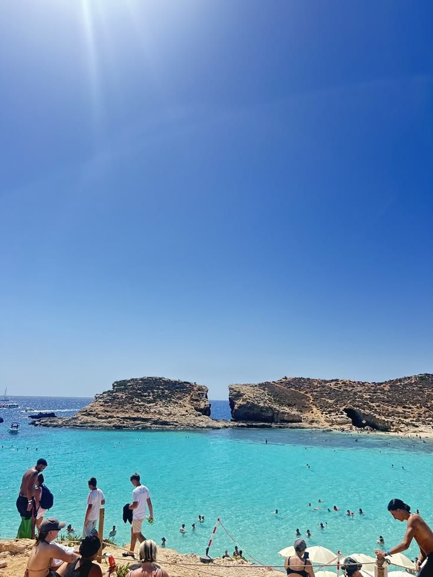
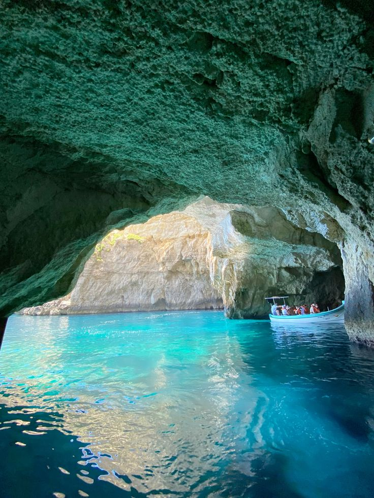

The Blue Lagoon
Paradise pool with white sandy seafloor and cyan waters.

Crystal-clear currents

Scenic coastal cliffs

The Blue Grotto
System of seven sea caves with a 30-meter main arch, famous for its phosphorescent blue glow.